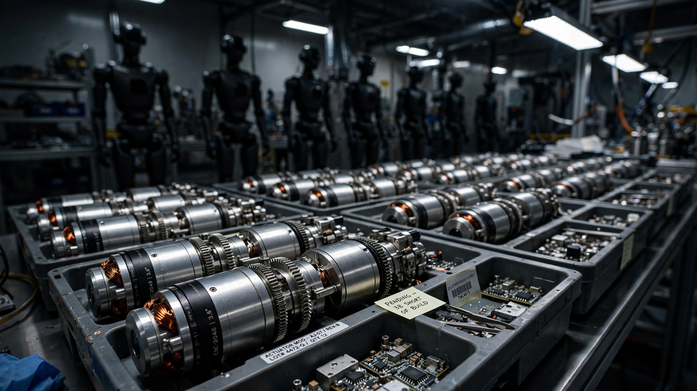

Every Humanoid Robot Maker Announced a Factory. Nobody Announced Enough Actuators.
Hyundai plans to build 30,000 Atlas robots a year. Tesla wants millions of Optimus units. XPeng just told the Wall Street Journal it will produce over 1,000 IRON robots a month by December. Add up their announced production targets and the industry needs roughly 8 million high-precision actuators per year by 2028. Known global supply capacity is under 2 million. The actuator gap, not the AI gap, is the binding constraint on the humanoid revolution.

Forty to sixty percent. According to McKinsey's April supply chain analysis, that is the share of a humanoid robot's bill of materials consumed by actuators, the electromechanical joints that convert control signals into physical motion. Not the neural network running on the head-mounted compute module, which accounts for 10 to 15 percent. Not the battery, which comes in at 5 to 10 percent. Not the cameras and force sensors, at 10 to 20 percent. Actuators alone eat more than the rest of the BOM combined, and the global supplier base capable of manufacturing them at the precision humanoid locomotion demands can be counted on two hands.
Meanwhile every carmaker on the planet has decided humanoid robots are the next vehicle platform. On Tuesday, the Wall Street Journal reported that XPeng aims to build monthly production capacity of its IRON robot to more than 1,000 units by December, ahead of a global commercial rollout in 2027. Hyundai Motor Group plans to deploy more than 25,000 Atlas units across its factories starting in 2028, with a 30,000-unit annual production capacity target for its new North American robot factory. Tesla continues to describe Optimus as the company's most valuable long-term product. Morgan Stanley projects China alone will ship 50,000 humanoid robots this year and 100,000 next year.
Nobody is projecting 8 million actuators.
Counting the Joints
Every humanoid robot requires a different number of actuators depending on its design, but they all need dozens of them. Boston Dynamics' Atlas uses roughly 10 high-performance actuators in its core locomotion system, focused on the legs and hips, each one a precision assembly of brushless motors, harmonic reducers, force sensors, and encoders that must deliver explosive torque in a package small enough to fit inside a thigh. XPeng's IRON specifies 82 degrees of freedom across the full body, including 22 per hand, which translates to approximately 60 actuated joints requiring purpose-built drive units. Morgan Stanley's teardown of Tesla's Optimus Gen 2 attributes $21,300 of a $55,000 total BOM to the legs alone, with another $9,500 for the hands, and the overwhelming majority of cost in both subsystems is actuator hardware.
Aggregate the announced production targets across every company with a public humanoid roadmap, estimate actuator count per unit from published specifications and teardown data, and a demand curve emerges that the current supply base cannot meet.
| Company | Announced units/yr (2028) | Actuators per unit | Total actuator demand |
|---|---|---|---|
| Hyundai (Atlas) | 30,000 | ~10 | 300,000 |
| Tesla (Optimus) | 120,000 | ~28 | 3,360,000 |
| XPeng (IRON) | 50,000 | ~40 | 2,000,000 |
| Other China (aggregate) | 50,000 | ~30 | 1,500,000 |
| Figure, Agility, others | 10,000 | ~25 | 250,000 |
| Total | 260,000 | 7,410,000 |
Conservative assumptions soften the number. Not every announced target will be met on schedule. XPeng's 82 degrees of freedom include passive and elastic joints that may not require discrete actuator modules. Tesla's 120,000-unit figure extrapolates from publicly stated monthly targets that the company has not independently confirmed for 2028 specifically. Cut every line by a third and the total still exceeds 5 million actuators per year.
The Supply Side Is Thinner Than You Think
Hyundai Mobis, the auto parts subsidiary of Hyundai Motor Group, announced at CES 2026 that it would supply actuators for Atlas, with plans to build a mass-production facility capable of 350,000 units per year by 2028. In the same announcement, it described this as its first commercial customer in the robotics components market. Zack Jackowski, general manager of Atlas at Boston Dynamics, framed the rationale explicitly: "By working with Hyundai Mobis, a company with proven expertise in the global automotive business, we expect to build a highly reliable component supply chain and accelerate the pace of actuator development."
Three hundred and fifty thousand is a large number in the context of the current actuator market. It is fewer than five percent of the projected demand.
Harmonic Drive Systems, the Japanese firm that has supplied precision gear reducers to the industrial robotics industry for decades, produces several hundred thousand units annually, but most are sized for the smaller joint loads of traditional six-axis arms, not the explosive torque profiles that humanoid legs demand. Samsung Electro-Mechanics invested in Alva Industries, a Norwegian manufacturer of ultracompact electric motors, but has disclosed no volume production timeline. LG Electronics announced plans for its Axium actuator line, with mass production "by end of 2026," without stating a capacity figure. A constellation of Chinese small-and-medium enterprises produces actuator components, particularly harmonic reducers and frameless motors, but as one of them, Mosrac Motor, acknowledged in a June LinkedIn post, "fewer than 10 suppliers worldwide can build high-precision actuators at volume."
Sum the known and announced capacity generously and the supply side looks like this:
| Supplier | Estimated capacity/yr | Status |
|---|---|---|
| Hyundai Mobis | 350,000 | Factory planned for 2028 |
| Harmonic Drive Systems (Japan) | 200,000–300,000 | Operating, sized for industrial arms |
| Chinese SME aggregate | 500,000–1,000,000 | Fragmented, variable precision |
| Samsung, LG, others | Unknown | Investment or pre-production stage |
| Total known | ~1.5–2 million |
The gap between 5 to 8 million units of demand and 1.5 to 2 million units of supply is not a rounding error. It is a 3-to-5x structural shortfall that persists even after cutting every production target by a third, and it exists before accounting for the fact that most listed capacity produces actuators designed for lighter-duty applications than humanoid locomotion requires.
The Price Problem Inside the Gap
A supply shortfall constrains volume. A price mismatch constrains the business model. Both are operating simultaneously.
Hyundai has stated that Atlas will cost $140,000 per unit in early mass production and drop to $30,000 when production exceeds 50,000 units. If actuators represent 50 percent of that target BOM, as McKinsey's midpoint estimate suggests, then the 10 actuators inside each Atlas need to average $1,500 apiece at volume. Current market prices for precision robotic actuators with integrated harmonic drives, encoders, and torque sensors run between $3,000 and $10,000 per unit depending on torque class and sensor integration, according to pricing from multiple industrial robotics distributors.
Atlas needs a 2-to-7x cost reduction from where actuators trade today. That is ambitious but plausible at automotive-scale volumes, which is precisely why Hyundai Mobis, not a robotics startup, got the contract.
Tesla's math is harder. Elon Musk has described a target retail price of $20,000 to $25,000 for Optimus, implying a BOM in the $10,000 to $12,000 range at the margins hardware companies actually achieve. If actuators consume 50 percent of that BOM, the 28 actuators across legs, hands, and core need to average $178 to $214 each. Current pricing is 14 to 56 times higher. No learning curve in the history of precision electromechanical manufacturing has delivered that kind of cost reduction without a fundamental redesign of the component, one that either eliminates the harmonic reducer, replaces rare earth magnets with ferrite alternatives that accept a torque penalty, or both. Tesla may be planning exactly that, but the actuators they would mass-produce would be a different animal from the ones in every other humanoid on the market, and the performance trade-offs of that redesign have not been publicly disclosed.
The Magnet Problem Under the Price Problem
Underneath every actuator is a brushless DC motor, and inside every brushless DC motor is a set of neodymium-iron-boron permanent magnets. NdFeB magnets are the strongest permanent magnets commercially available, and they are what allows a motor the size of a coffee mug to generate enough torque to swing a humanoid robot's leg through a walking stride.
According to the International Energy Agency, China refines 91 percent of the world's rare earth elements and manufactures 94 percent of its permanent magnets. Every actuator in every humanoid robot on every announced production roadmap depends on a supply chain that runs through Chinese refineries and Chinese magnet factories, at a time when the Trump administration is, according to Politico, considering an executive order to tighten robotics industry regulations and reduce reliance on Chinese components.
Quantitatively, the rare earth exposure is less dramatic than the geopolitical framing suggests, at least initially. A typical precision actuator motor uses 50 to 200 grams of NdFeB magnet material depending on its torque rating. At a conservative average of 100 grams per actuator and 30 actuators per robot, each humanoid contains roughly 3 kilograms of NdFeB. Multiply by 260,000 robots per year and the industry needs 780 metric tons of processed NdFeB magnets annually, roughly 0.4 percent of global production of approximately 180,000 metric tons per year.
At that volume, humanoid robots are a rounding error in the rare earth market. At Tesla's eventual 1-million-unit annual target, the number becomes 3,000 metric tons, or 1.7 percent of global NdFeB output, arriving on top of electric vehicle motors, wind turbine generators, and consumer electronics that already consume the majority of magnet production and are growing their own demand curves simultaneously. What limits expansion is not total tonnage but supplier concentration: 94 percent of the magnets sitting inside the single most expensive component of the industry's most hyped product category come from a country whose trade relationship with the United States grows more adversarial by the quarter.
Who Wins the Actuator Race
KB Securities analyst Kang Sung-jin summarized the structural shift in a February note: "As demand for humanoid robots surges while more companies call for supply chains that exclude China, a single-supplier system can no longer handle the volume. There is a clear shift toward securing multiple suppliers at the same time."
The companies best positioned are the ones treating actuators like automotive companies treat engines: a vertically integrated core competency, not a purchased commodity. Hyundai Motor Group is furthest along this path, with Hyundai Mobis building dedicated actuator capacity, Boston Dynamics designing the specifications, and 25,000 Atlas units in captive demand from Hyundai and Kia's own factories creating the volume floor that justifies the capital expenditure. XPeng CEO He Xiaopeng has described the company's approach similarly, claiming XPeng builds "everything internally, including chips, operating systems, robotic joints, and dexterous robotic hands" and positioning it as "the only robotics company in China with a fully self-developed full-stack architecture." Whether that claim holds under scrutiny, the strategic intent is clear: whoever controls the actuator supply controls the ramp rate.
Companies relying on third-party actuator suppliers face a different calculus. Between 2024 and 2031, the actuator market is projected to grow from $150 million to $9.86 billion, an 80 percent compound annual growth rate, according to industry estimates cited in the Korea JoongAng Daily. Margins on precision actuators are high because the supplier base is thin, which means every new entrant that achieves volume production captures significant value, but also that incumbents have limited incentive to expand capacity ahead of firm orders. A classic chicken-and-egg problem in capital-intensive manufacturing applies with particular force: actuator factories require specialized tooling, cleanroom-grade assembly environments for encoder calibration, and rare-earth magnet supply agreements that themselves carry 12-to-18-month lead times.
Limitations
Actuator counts per robot are estimates derived from published specifications, teardown reports, and company presentations. No humanoid robot maker publishes a complete actuator bill of materials. XPeng's 82 degrees of freedom include joints of varying complexity, and treating all of them as equivalent high-precision actuator modules likely overstates demand by 30 to 40 percent, which is why the table uses 40 actuators rather than 82. Tesla's actuator architecture is proprietary and may differ fundamentally from the harmonic-drive-based designs that define the current market, potentially serving an entirely different supply chain. Production targets are announcements, not commitments, and the history of manufacturing ramps is a history of delays, which is why the analysis provides both raw and discounted demand figures.
Supply-side estimates are even rougher. Many actuator manufacturers are private Chinese companies that do not disclose production volumes. Harmonic Drive Systems' capacity is inferred from annual reports covering all product lines, not humanoid-specific output. Its 1.5-to-2-million supply ceiling is a generous upper bound that includes capacity not yet built and components not yet qualified for humanoid-grade applications.
The Strongest Counterargument
The automotive industry has faced precisely this kind of supply-demand mismatch before, most recently with automotive-grade semiconductors during the 2020 to 2023 chip shortage, and resolved it within three years by redirecting existing capacity, qualifying new fabs, and accepting temporary substitutions that traded peak performance for supply reliability. That pattern may repeat here: high initial shortfall, rapid supplier entry driven by margin opportunity, and resolution within two to three years of demand materializing. If the $9.86 billion market projection holds, dozens of new entrants will compete for that revenue, and the bottleneck becomes a gold rush.
The counterargument weakens, however, when you consider that semiconductor fabs redirecting capacity involved reprioritizing which chips ran on existing production lines, not building new physical plants from scratch. Actuator production requires precision machining, magnet handling, and integrated assembly lines that take 18 to 24 months to commission even after financing is secured. The chip shortage resolved in three years because fab capacity existed and was misallocated. The actuator shortage will take longer because the capacity does not yet exist at all.
What This Means for You
If you are evaluating humanoid robot stocks, look past the AI demos and ask a simpler question: where are the actuators coming from? Any company announcing a 100,000-unit production target without naming its actuator supply chain is announcing a PowerPoint, not a factory. Hyundai Motor Group's decision to build dedicated actuator manufacturing through Mobis, with captive demand from its own vehicle plants, represents the only fully articulated supply strategy in the industry as of this writing. XPeng's vertical integration claim deserves scrutiny but points in the right direction. Tesla's silence on actuator sourcing is conspicuous given that actuators are five times more expensive than the AI compute module inside the robot's head.
If you work in precision manufacturing, electromechanical systems, or industrial motor production, the humanoid actuator market represents one of the largest new component categories to emerge in a decade. A market growing from $150 million to $9.86 billion in seven years, with fewer than 10 qualified suppliers worldwide, does not stay undersupplied for long. It does, however, reward the firms that move first, because qualification cycles in safety-critical robotics applications run 12 to 18 months, and every month of production data a supplier accumulates before competitors enter the market compounds into a moat that is difficult to cross.
For the rest of us, the actuator bottleneck determines when the humanoid robot actually arrives. Not when the demo video drops. Not when the CEO tweets a production target. When the factory that makes the joints inside the robot's knees produces enough of them, at a low enough price, to fill the robots that the other factory is supposed to assemble. Right now, those two numbers are separated by a factor of four. The revolution will be actuated, just not as quickly as the press releases suggest.